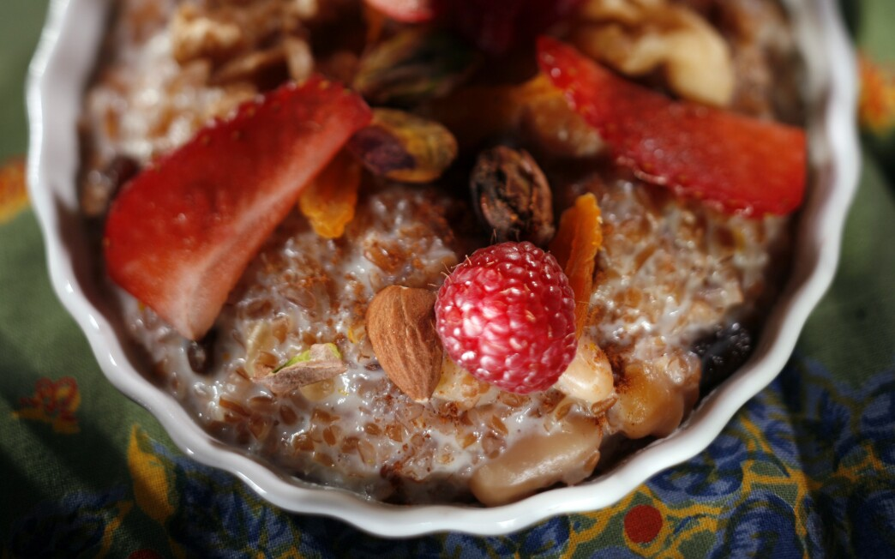

Wheat and Hazelnut Pudding

Description
This makes a great breakfast the next day if reheated and served with more honey & butter.
cinnamon and raisins can also be added. Source
Ingredients
- 8 ounces of bulgur wheat
- 8 ounces of hazelnuts – shelled & crushed
- 3 eggs
- ½ cup sour cream
- 2 cups milk or one cup of milk with heavy cream.
- 1 cup of honey
- 3 ounces of butter
- cinnamon and raisins can also be added
Steps
- Cook 8 ounces of bulgur wheat according to package directions.
- Crush 8 ounces of shelled
hazelnuts by placing them in a tea towel and pounding with a hammer. Toast in a medium
oven until they start to brown.
- Beat three eggs with ½ cup sour cream and 2 cups milk.
- Add the bulgur wheat, hazelnuts and 1 cup of honey. Place in a large baking dish.
- Slice 3 ounces of butter and place on top of the mixture.
- Bake in a medium oven for about 1 hour. If it begins to
look dry at any time, add more milk. For a richer dish, replace one cup of milk with heavy
cream